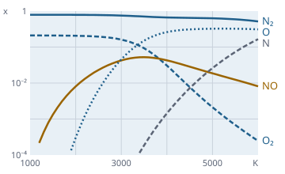

The one thermodynamics of the framework
Function overview for the presentation of the envisionz framework, as of 28 Sep 2026. Properties from partition functions,
aero-thermodynamics, combustion and equilibrium, water and real gases, transport properties, heat transfer and materials.
For each method: purpose, API, use in the framework, applications, examples. The examples are shortened.
Many API names are German (e.g. Gleichgewicht = equilibrium, Waermeleitung = heat conduction); they are shown unchanged.

Gleichgewicht.tp and partition-function species: air at 1 bar, 1000 to 6000 K.Principles of the module
Properties from partition functions envisionz.thermo
Statistical mechanics for 23 combustion species instead of JANAF polynomial fits. This replaces the ThermFunctions of ENVISIONZ-2020. Background, formulas and pseudocode →
FundamentalSpecies – 23 species
H, N, O, H2, N2, O2, CO, CO2, H2O, H2S, NO2, OH, NO, SO, SO2, CH4, Ar as well as CH3, CH2O, HCO, CH3O, HO2, H2O2. Diatomics with a direct (v, J) sum, H2O and CO2 anharmonic, H2O with a Watson rotor.
Methods
hmh0(sp, T)[J/mol],s0(sp, T)[J/(mol K)],phi(sp, T)(Giauque)hFunc,sFuncdimensionlesslnK(sp[], stoich[], T)– equilibrium constant- Constants
CO2,H2O, …,NAME,MM,HF0
Used in
What for
Enthalpy and entropy of combustion gases, equilibrium constants, teaching (where cp(T) comes from).
Example – enthalpy rise of CO2 and Kp of dissociation
double dh = FundamentalSpecies.hmh0(FundamentalSpecies.CO2, 1800) / FundamentalSpecies.MM[FundamentalSpecies.CO2];
double lnK = FundamentalSpecies.lnK(new int[] {FundamentalSpecies.CO2, FundamentalSpecies.CO, FundamentalSpecies.O2},
new double[] {-1, 1, 0.5}, 2500);AirFunctions and SpeciesCache – fast enough for maps and GUIs
AirFunctions: dry air with a table from 150 to 2600 K and cubic Hermite with exact slopes. The exact paths remain public. SpeciesCache: the same idea for all 23 species (200–4000 K). It makes the combustion equilibrium about 1500 times faster (about 1.5 s down to about 1 ms).
Methods
h(T),s0(T),cp(T),hExact/s0Exact/cpExacttFromH(h, t0),tFromS(s, t0),dhIdealExpansion(pr, t1)pqOfDhqt(dhqt, eta, t1, isComp);warmUp()in the backgroundSpeciesCache.hmh0/s0/phi/lnK,warmUp()
Used in
What for
Pressure ratio from enthalpy rise in compressor and turbine maps, fast isentropes, interactive equilibrium calculation.
Example – pressure ratio of a compressor stage from Δh/T
AirFunctions.warmUp(); // once, in the background
double pq = AirFunctions.pqOfDhqt(120.0, 0.88, 288.15, true); // Δh/T [J/(kg K)], η, T1Aero-thermodynamics envisionz.thermo
AeroThermo – some 60 functions for gas turbines and flight
cp, h, φ, γ with fuel-air ratio (FAR) and humidity (WAR); inverses T(h), T(φ); gas dynamics (Mach number ↔ static/total, flow function); isentropic and polytropic efficiencies; ISA atmosphere; VCAS/VTAS/VEAS; mixing of two streams. Background, formulas and pseudocode →
Methods (selection)
cpOfT,hOfT,gammaOfT,tOfH(each with far[, war]),sOfTPttOfMn,tsOfMn,ptOfMn,mnOfPq,qaOfMn,mnOfQapqOfDhqt,dhqtOfPq,etaPolyOfIsen,etaIsenOfPolytambOfAlt,pambOfAlt,ptOfAltMn,vtasOfMn,mnOfVcastMixed,farMixed,specHumOfRelHum,propEta
Used in
What for
Cycle calculation, map conversion, inlet and nozzle states, flight conditions, mixer in a two-stream engine.
Example 1 – total state in cruise
double t0 = AeroThermo.tambOfAlt(10668, 0); // 35,000 ft, ISA
double pt = AeroThermo.ptOfAltMn(10668, 0.8, 0, 0);
double v = AeroThermo.vtasOfMn(0.8, 10668, 0, 0); // ram drag W·vExample 2 – mixed temperature of core and bypass stream
double tm = AeroThermo.tMixed(wCore, 1290, 0.017, wBypass, 530, 0);Combustion, fuels and kinetics envisionz.thermo
Combustion – combustion calculation (port of VERB2, ACM)
Humid air, element balances, basic solution without dissociation, equilibrium with 17 species (Newton in the logarithm), 12 equilibrium constants from the partition functions, adiabatic flame temperature. With fast …Cached paths and real fuels via JetFuel. Combustion calculation: Background, formulas and pseudocode → Kinetics and reactor: Background, formulas and pseudocode →
Methods
burn(...),burnCached,burnFuel(fuel, tt, pt, λ, …)adiabaticT(...),adiabaticTCached,adiabaticTFuel(fuel, pt, λ, …, tFuel, …)rkFundamental(T),rkCached(T),psiluf(tt, pt, φ)verbOf(sel, …)– scalar interface for NFML
Used in
What for
Combustor exit in the engine model, exhaust composition, flame temperature over the equivalence ratio.
Example – in an NFML deck
CALL(TAD) = VERBTAD(PT, BETA, CMA, HMA, SMA, OMA, ENMA, WMA, PHIL, TTAIR, HU, IDISS);JetFuel – nine kerosenes of the NJFCP
A1–A3, C1–C6 after Xu/Wang/Colket/Edwards (2015), NASA-7 polynomials, exact 0 K bridge to the partition functions. Validated: ≤ 0.05 % against the tables of the report, heating value closure ≤ 0.013 %, Tad peaks within the 2280–2300 K window.
Methods
byName("A2"),cp(T),h(T),hRel(T),s0(T)farStoich(φ, ttAir, p),gC(),gH()
Used in
What for
Fuel comparison (conventional versus alternative), fuel preheating, stoichiometric FAR.
Example – Tad of A2 at λ = 1, preheated
JetFuel a2 = JetFuel.byName("A2");
double tad = Combustion.adiabaticTFuel(a2, 3e6, 1.0, 0.0, 800, 400, true, true);Kinetics and Reactor0D – finite reaction rates
Methane mechanism after Smooke-Giovangigli (16 species, 25 reaction equations, third bodies; no fall-off reactions and no nitrogen chemistry). Plus the adiabatic constant-pressure reactor (BDF1, modified Newton, step doubling) with ignition delay.
Methods
Kinetics.omegaDot(T, c)[mol/(m³ s)],heatRelease(T, ω)Reactor0D.run(t0, p, y0, tEnd),ignitionDelay(t0, p, φ, tEnd)ch4Air(φ),h2Air(φ),xToY,yToX,warmUp()
Used in
What for
Ignition delay times, autoignition in premixing ducts, NO formation, teaching reaction kinetics.
Example – ignition delay of methane-air
double tau = Reactor0D.ignitionDelay(1400, 101325, 1.0, 0.05); // sChemical equilibrium, rocket, shock, detonation envisionz.thermo.gleichgewicht
Method after Gordon and McBride (NASA RP-1311), as in CEA. Property data via the Spezies interface, partition functions by default. Against NASA CEA: TP to 1e-13, HP/SP to 6e-8, rocket 6e-6. Gibbs minimisation: Background, formulas and pseudocode → Rocket, shock, detonation: Background, formulas and pseudocode →
Gleichgewicht (equilibrium) – TP, HP, SP, frozen
Newton in ln nj, ln n and ln T with Lagrange multipliers of the element balances. Plus the equilibrium derivatives: cp, ∂ln V/∂ln T, γs, speed of sound.
Methods
tp(g, b0, T, p),hp(g, b0, h0, p, tStart),sp(g, b0, s0, p, tStart)gefroren(g, n, T, p)(frozen),Zustand(state): n, h, s, ρ, cp, γs, aGasgemisch(spezies),Reaktanden().mit(...),Zustandssummenspezies.alle(tabelliert)
Used in
What for
Combustor and afterburner states with dissociation, exhaust composition, hot-gas properties for nozzles.
Example – hydrogen-oxygen at 3000 K and 1 bar
Gasgemisch g = new Gasgemisch(Zustandssummenspezies.alle(true));
double[] b0 = new Reaktanden().mit(h2, 2, 298.15).mit(o2, 1, 298.15).elementmengen(g);
Gleichgewicht.Zustand z = Gleichgewicht.tp(g, b0, 3000, 1e5); // z.n(), z.gammaS(), …Rakete (rocket), Stoss (shock), Detonation
Rocket with an infinite-area combustor (equilibrium or frozen): throat at u = a, exit at pressure or area ratios, c*, Isp, CF. Incident shock (equilibrium or frozen). Chapman-Jouguet detonation.
Methods
Rakete.rechne(g, b0, h0, pc, pv[], ae[], gefroren)→ chamber, throat, exits, c*Stoss.rechne(g, n1, T1, p1, u1, gefroren),rechneMach(…, M1, …)Detonation.rechne(g, n1, T1, p1)
Used in
What for
Preliminary design of rocket engines, shock-tube experiments, safety studies (detonation pressure and velocity).
Example – H2/O2 rocket, 20 bar, area ratio 40
Rakete.Ergebnis r = Rakete.rechne(g, b0, h0, 20e5, new double[0], new double[] {40}, false);
double isp = r.austritt().get(0).ispVakuum();Water and steam envisionz.thermo.wasser
If97 and Wassertransport – IAPWS-IF97, R12-08, R15-11
All five regions with B23 and the saturation line. The backward paths T(p,h), T(p,s) and p(h,s) run through the forward equations, consistent rather than via backward equations. Viscosity and thermal conductivity in the industrial formulation. Checked against all verification tables (IF97 to 3.2e-9). Background, formulas and pseudocode →
Methods
vonPT,vonPH,vonPS,vonHS,vonTX,vonPX(“from p,T” …) →Zustand(v, h, u, s, cp, cv, w, x)psat(T),tsat(p),saettigungT/P(saturation),bereich(p, T)(region)Wassertransport.viskositaet(z),waermeleitfaehigkeit(z),prandtl(z)
Used in
What for
Steam cycles and heat recovery steam generators, water/steam injection, cooling, saturation pressure for humid air.
Example 1 – turbine expansion in a steam cycle
If97.Zustand ein = If97.vonPT(100e5, 823.15);
If97.Zustand aus = If97.vonPS(0.08e5, ein.s()); // isentropic, wet steam: aus.x()
double wt = ein.h() - aus.h();Example 2 – Prandtl number of feedwater
double pr = Wassertransport.prandtl(If97.vonPT(150e5, 470));Real gases and mixtures envisionz.thermo.kubisch · envisionz.thermo.helmholtz
Kubisch (cubic) – Peng-Robinson and Soave-Redlich-Kwong
Both equations in general form, also for mixtures (kij). Z roots, fugacities, departure functions, saturation pressure, flash with Michelsen stability test and Rachford-Rice. 35 pure substances with data from CoolProp; PR to 1e-11 against CoolProp. Peng-Robinson and SRK: Background, formulas and pseudocode → Helmholtz equations: Background, formulas and pseudocode →
Methods
new Kubisch(Art.PENG_ROBINSON, stoffe[, kij])zustand(T, p, x, Phase.DAMPF)(vapour) → Z, v, ln φ, hres, sressaettigungsdruck(k, T)(saturation pressure),flash(T, p, z)→ β, x, yReinstoffe.stoff("Methan"),alle()
Used in
What for
Natural gas and refrigerants, condensation in fuel lines, fast real-gas correction in compressor calculations.
Example – methane-propane flash
Kubisch pr = new Kubisch(Kubisch.Art.PENG_ROBINSON, List.of(Reinstoffe.stoff("Methan"), Reinstoffe.stoff("Propan")));
Kubisch.Flash f = pr.flash(250, 40e5, new double[] {0.5, 0.5}); // f.beta(), f.x(), f.y()Iapws95, Reinfluide, Gerg2008 – Helmholtz reference equations
All term forms of the reference equations. IAPWS-95 for water. 34 further pure fluids and air (coefficients as in CoolProp 8.0.0, to 1e-12). GERG-2008 for natural gas mixtures with 21 components, line by line after the NIST code (1e-14). Saturation after Akasaka.
Methods
Reinfluide.stoff("Kohlendioxid")→Reinfluid(pure fluid)zustand(T, ρ),zustandTP(T, p),saettigungT(T),saettigungP(p)Gerg2008.druck(T, d, x21)(pressure),dichte(…)(density),eigenschaften(T, d, x21)(properties)
Used in
What for
Supercritical CO2 (sCO2 cycles), hydrogen, natural gas compressors and pipelines, reference for checking faster models.
Example – sCO2 at the compressor inlet
Reinfluid co2 = Reinfluide.stoff("Kohlendioxid");
var z = co2.zustandTP(305.0, 7.7e6); // close to the critical point: ρ, c_p, wEquations of state behind one contract envisionz.thermo.zustand
EquationOfState – interchangeable in the flow solver
One contract for a flow solver's equation of state, returning GasState. Implementations: ideal and thermally perfect gas, AGA8-DC92, IF97 (water/steam with η and λ), Helmholtz (pure fluid or GERG-2008), air from partition functions. Moved here from machieve, where it is still used bit-identically. Background, formulas and pseudocode →
Methods
fromDensityAndInternalEnergy(ρ, e, u, v, w)fromPressureAndTemperature(p, T),fromDensityAndPressureisentropicExpansion(p, h0, s0, uGuess),meanMolarMass()- Implementations:
IdealGasEquationOfState.air(),ThermallyPerfectIdealGas,AGA8EquationOfState,If97Zustandsgleichung,HelmholtzZustandsgleichung,LuftIdeal
Used in
What for
CFD with a selectable property model: ideal gas for aerodynamics, AGA8/GERG for natural gas, IF97 for steam.
Example – same mesh, different gas
EquationOfState eos = naturalGas ? new HelmholtzZustandsgleichung(gergMixture) : IdealGasEquationOfState.air();
GasState s = eos.fromPressureAndTemperature(60e5, 290); // s.rho(), s.T(), …Transport properties of dilute gases envisionz.thermo.transport
Gastransport and Kollisionsintegrale (collision integrals)
Viscosity and binary diffusion after Chapman-Enskog, thermal conductivity after Warnatz (as in Cantera) or Eucken. Mixtures after Wilke and Mason-Saxena. Collision data from GRI-Mech 3.0. Against Cantera: μ 0.12 %, D 0.06 %, λ 0.7 %. Background, formulas and pseudocode →
Methods
viskositaet(sp, T)(viscosity),waermeleitfaehigkeit(sp, T)(conductivity),diffusion(i, j, T, p)viskositaetGemisch(sp[], x[], T),waermeleitfaehigkeitGemisch(...),diffusionGemisch(...)(mixture)Kollisionsintegrale.omega22,omega11,aStern
Used in
What for
Prandtl and Reynolds numbers of hot exhaust, heat transfer in combustors, diffusion flames.
Example – viscosity of exhaust gas
int[] sp = {FundamentalSpecies.N2, FundamentalSpecies.O2, FundamentalSpecies.CO2, FundamentalSpecies.H2O};
double mu = Gastransport.viskositaetGemisch(sp, new double[] {0.75, 0.12, 0.05, 0.08}, 1200);Wassertransport (IAPWS) is the better choice.Heat transfer and pressure loss envisionz.thermo.waerme
Rohrreibung, Rohrwaermeuebergang, Aussenumstroemung – correlations for pipe friction, pipe heat transfer, external flow
Everything dimensionless: dimensionless numbers in, λ or Nu out. Properties are supplied from outside. Colebrook-White, Haaland, Petukhov; Gnielinski, Hausen, VDI laminar, Dittus-Boelter; flat plate, cylinder (Churchill-Bernstein), natural convection (Churchill-Chu). Heat transfer in the pipe passes continuously from laminar to turbulent between Re = 2300 and 104; pipe friction jumps at Re = 2300. Correlations: Background, formulas and pseudocode → ε-NTU and LMTD: Background, formulas and pseudocode → Heat conduction: Background, formulas and pseudocode →
Methods
Rohrreibung.rohr(Re, k/d),colebrook,haaland,druckverlust(λ, L, d, ρ, w)(pressure loss)Rohrwaermeuebergang.rohr(Re, Pr, d/L),gnielinski,alpha(Nu, λ, d)Aussenumstroemung.platte(Re, Pr, ReKrit),zylinder(Re, Pr),senkrechtePlatte(Ra, Pr)(vertical plate),rayleigh(...)
Used in
What for
Cooling channels in blades, oil and fuel lines, casing cooling, heat exchanger design.
Example – heat transfer and pressure loss in a cooling channel
double nu = Rohrwaermeuebergang.rohr(re, pr, d / l);
double alpha = Rohrwaermeuebergang.alpha(nu, lambdaFluid, d);
double dp = Rohrreibung.druckverlust(Rohrreibung.rohr(re, 1e-4), l, d, rho, w);Waermeuebertrager (heat exchanger) – ε-NTU and LMTD
ε(NTU, Cr) for counterflow, parallel flow, four kinds of crossflow and shell-and-tube (including n shell passes). Inverse NTU(ε), also for the non-monotonic crossflow case. LMTD, correction factor F, rating and sizing.
Methods
epsilon(bauart, ntu, cr),ntu(bauart, ε, cr),epsilonMantelrohr(...)(shell-and-tube)lmtd(ΔT1, ΔT2),korrekturF(bauart, ε, cr)nachrechnen(bauart, Ch, Cc, UA, Th,in, Tc,in)(rating),auslegen(…, Q, …)(sizing)
Used in
What for
Recuperator in a gas turbine, oil and air coolers, intercoolers, heat recovery steam generators.
Example – required UA of a recuperator
var e = Waermeuebertrager.auslegen(Waermeuebertrager.Bauart.GEGENSTROM, cHot, cCold, 2.0e6, 850, 450); // counterflowWaermeleitung (heat conduction) – finite volumes, steady and transient
1D planar, cylinder, sphere; 2D planar and axisymmetric; non-uniform grids. Boundaries: temperature, heat flux, convection, radiation. Nonlinear λ(T) and ρcp(T). Time stepping with the θ method, Crank-Nicolson with Rannacher start. The linear systems are solved by CG from framework-math.
Methods
new Waermeleitung(Geometrie.ZYLINDER, rFlaechen, stoff)(also 2D)rand(seite, Rand.konvektion(α, T∞))(boundary),strahlung,temperatur,waermestrom,adiabat()quelle(q)(source),stationaer(start)(steady),zeitlauf(t0, dauer, n, θ)(transient),waermestrom(t, seite)
Used in
What for
Temperature field in discs, casings and thermal barrier coatings, heat-up at start, pipe walls.
Example – pipe wall with convection inside and outside
Waermeleitung w = new Waermeleitung(Waermeleitung.Geometrie.ZYLINDER,
Waermeleitung.gleichmaessig(0.05, 0.06, 40), Waermeleitung.Stoff.konstant(16, 4e6));
w.rand(Waermeleitung.Seite.LINKS, Waermeleitung.Rand.konvektion(2000, 600)); // inner side
w.rand(Waermeleitung.Seite.RECHTS, Waermeleitung.Rand.konvektion(50, 300)); // outer side
double[] t = w.stationaer(null);Materials database envisionz.thermo.werkstoff
Werkstoffdatenbank, Werkstoff, Kennlinie, LarsonMiller – database, material, property curve, creep
21 nickel-base alloys (Special Metals, Haynes, Nickel Institute), each value with its source. Property curves via PCHIP without extrapolation. Creep rupture after Larson-Miller with data range. A user file adds or replaces materials. Background, formulas and pseudocode →
Methods
Werkstoffdatenbank.standard(),anwender()(user),lese(pfad)(read),werkstoff(name)wert(Kennwert.LAMBDA, T)(value),dichte(T)(density),kennlinie(k)zeitstand()(creep data points);larsonMiller()→LarsonMiller:lebensdauer(T, σ)(life),spannung(T, th)(stress),temperatur(σ, th),imDatenbereich(within data range)
Used in
What for
Cooling demand and life of turbine blades, heat conduction with real material data, material selection.
Example – allowable metal temperature for 10,000 h at 250 MPa
Werkstoff w = Werkstoffdatenbank.standard().werkstoff("HAYNES 282");
double tAllow = w.larsonMiller().temperatur(250e6, 1e4);
double lambda = w.wert(Kennwert.LAMBDA, tAllow);Usage matrix in the framework
Which modules use which parts today, counted in the source code (excluding probes).
| Module | Partition functions | AeroThermo | Combustion | Water | Real gas | Equations of state | What for |
|---|---|---|---|---|---|---|---|
| app-thermo | ● | ● | Species table, JANAF comparison, equilibrium, Tad, reactor | ||||
| app-maps | ● | ● | Map conversion PQ ↔ Δh/T, stage work, Smith chart | ||||
| app-charts | ● | Joule and T-s diagram, mixer | |||||
| commandline-eqnparser / app-eqnparser | ● | ● | Built-ins VERBXX, VERBTAD, PSATOFT in NFML decks | ||||
| app-machieve | ● | ● | CFD solver: flux schemes, boundaries, chemistry; GERG mixtures |